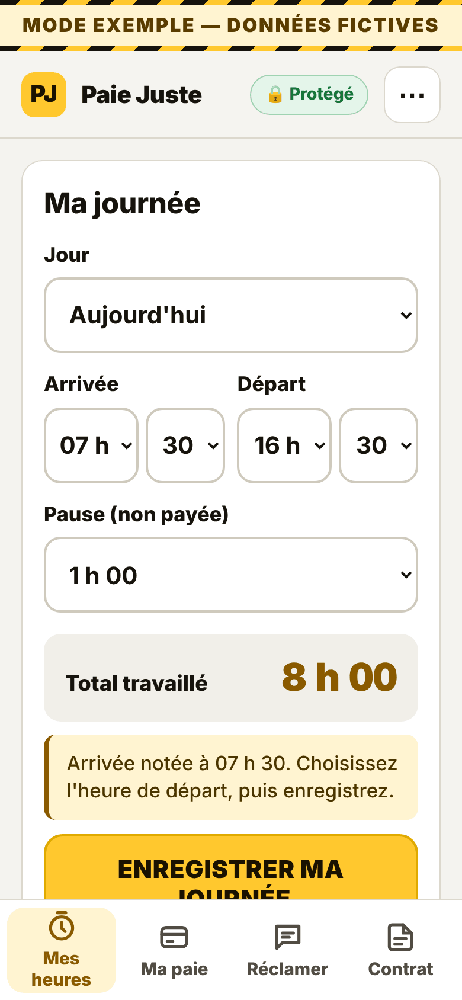
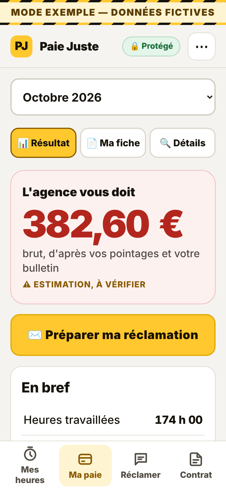
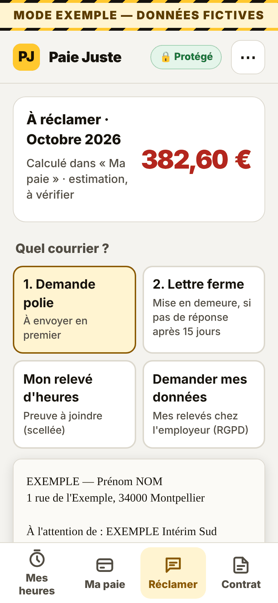

Vérifier sa fiche de paie gratuitement, sans compte
Une heure supplémentaire oubliée, une majoration absente, une indemnité de fin de mission qui manque : sur un bulletin de salaire, l'écart ne saute pas aux yeux. Paie Juste est une application gratuite qui vous aide à le repérer vous-même, à partir de vos propres heures.
Ouvrir Paie JusteCe que fait l'application
- Noter vos heures : l'arrivée, le départ et la pause, chaque jour.
- Estimer la paie due selon les règles du droit du travail français : heures supplémentaires ou complémentaires, indemnité de fin de mission d'intérim, prime de précarité de CDD, congés payés.
- Comparer au bulletin : photo ou PDF de la fiche de paie, ou saisie à la main. Chaque montant lu peut être corrigé.
- Préparer une réclamation : un brouillon de demande polie, puis de lettre ferme, que vous relisez et envoyez vous-même.



Vos données restent chez vous
Pas de compte, pas de serveur, pas de statistiques. Les pointages, le contrat et les bulletins restent sur le téléphone. Chaque saisie est scellée dans une chaîne d'empreintes SHA-256 : on ne peut pas la modifier en cachette, une correction est enregistrée avec son motif.
Installer l'application sur le téléphone
Ouvrez paie-juste.netlify.app dans Chrome (Android) ou Safari (iPhone), puis « Ajouter à l'écran d'accueil ». L'application s'ouvre ensuite même sans connexion.
Questions fréquentes
Est-ce gratuit ?
Oui, sans compte et sans publicité. Le code est libre (licence MIT).
Mes fiches de paie sont-elles envoyées quelque part ?
Non. Rien ne part sans un geste de votre part : copier, partager ou imprimer.
Est-ce un conseil juridique ?
Non. Les montants sont une estimation, à vérifier. Une convention collective peut prévoir mieux que la loi. En cas de doute, l'inspection du travail ou un syndicat peut vous aider.
Pour quels contrats ?
Salariés du privé en France : CDI, CDD, intérim, temps partiel.
Vérifier ma paie avec Paie Juste